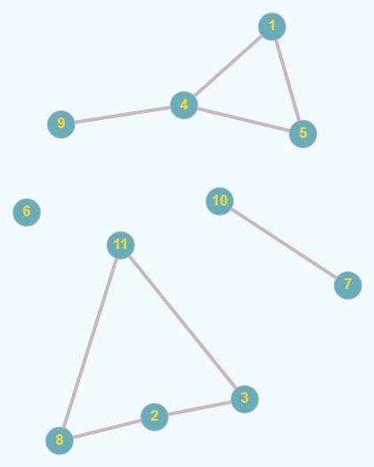
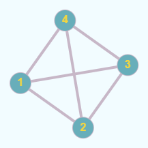
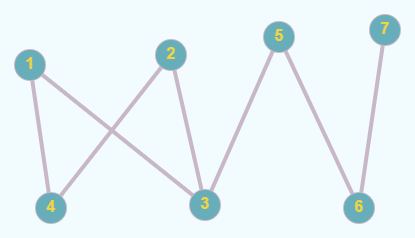
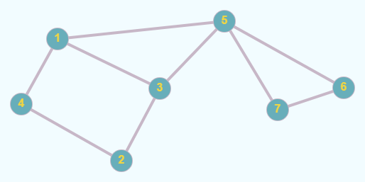

Definiție: Se numește graf neorientat o pereche ordonată de mulțimi G = (X, U), unde:
- X este o mulțime finită și nevidă de elemente numite vârfuri sau noduri;
- U este o mulțime finită de submulțimi cu două elemente din X, numite muchii.
Vom nota în continuare vârfurile cu valori între 1 și n – unde n este numărul de vârfuri din graf, iar muchiile cu [x,y] sau (x, y), unde x și y sunt vârfuri și se numesc extremitățile muchiei.
Un vecin al unui vârf x este orice vârf y cu proprietatea că există muchia [x, y].
Două vârfuri între care există muchie se numesc adiacente.
Două muchii sunt incidente dacă au o o extremitate comună. Un vârf este incident cu o muchie dacă vârful este extremitate a acelei muchii.
Mulțimea muchiilor are proprietatea de simetrie: dacă [x, y] este muchie, atunci și [y, x] este muchie.
Conform definiției:
- într-un graf neorientat nu există muchie de la un vârf la el însuși;
- intre două vârfuri distincte există cel mult o muchie.
Exemplu: Fie G = (X, U), unde:
- X = {1, 2, 3, 4, 5, 6, 7, 8, 9, 10, 11}
- U = {[1,4], [1,5], [2,3], [2,8], [3,11], [4,5], [4,9], [7,10], [8,11]}

Definiție: Într-un graf neorientat se numește grad al unui vârf numărul de vârful adiacente cu acesta (sau numărul de muchii incidente cu acesta). Gradul unui vărf x se notează d(x) (degree).
Observații:
- un vârf cu gradul 0 se numește izolat. În graful de mai sus, vârful 6 este vârf izolat.
- un vârf cu gradul 1 se numește terminal. În graful de mai sus, vârful 9 este vârf terminal.
- gradul maxim al unui vârf într-un graf cu n vârfuri este n-1.
- Teoremă: Într-un graf neorientat, suma gradelor tuturor vârfurilor este dublul numărului de muchii.
Consecințe:
- suma gradelor tuturor vârfurilor este număr par.
- într-un graf neorientat, numărul de vârfuri de grad impar este întotdeauna par.
Definiție: Fie G=(X, U) un graf neorientat. Graful G se numește graf complet dacă oricare două vârfuri
distincte ale sale sunt adiacente. Un graf complet cu n vârfuri se notează Kn.
Exemplu: Graful următor este graful K4.

Observație:Într-un graf complet cu n vârfuri sunt combinări de n luate câte 2, adică n*(n-1)/2 muchii și fiecare vârf are gradul n-1.
Observație: Sunt 2n∗(n−1)/2 grafuri neorientate distincte cu n vârfuri.
Definiţie: Un graf G=(X, U) se numește graf bipartit dacă există două mulţimi nevide A și B astfel încât X = A ∪ B, A ∩ B = ∅ şi orice muchie u a lui G are o extremitate în A iar cealaltă în B. Mulţimile A şi B formează o partiţie a lui X.
Exemplu: Graful următor este bipartit. A = {1, 2, 5, 7} și B = {3, 4, 6}.

Definiție: Se numește lanț o succesiune de vârfuri L = [x1, x2, ⋯, xk] cu proprietatea că oricare două vârfuri consecutive sunt adiacente.
Vârfurile x1 şi xk se numesc extremitățile lanțului. Numărul k-1 se numește lungimea lanțului și este numărul de muchii din care este format.
Lanțul care conține numai vârfuri distincte, două câte două, este lanț elementar.
Definiție: Se numește ciclu un lanț simplu în care primul vârf este identic cu ultimul. Dacă toate vârfurile sunt distincte, mai puțin primul și ultimul, se numește ciclu elementar.
Lungimea unui ciclu este egală cu numărul de muchii din ciclu. Lungimea minimă a unui ciclu este 3.
Un ciclu se numește par dacă lungimea sa este pară, respectiv impar în caz contrar.
Un graf neorientat care nu conține niciun ciclu se numește aciclic.
Exemple: În graful de mai jos:

- [2,4,1,3,5,7] este un lanț elementar;
- [1,5,3,2,4,1] este un ciclu elementar;
- [1,3,5,7,6,5,1] este un ciclu neelementar.
Definiție: Un graf neorientat se numește graf conex dacă pentru oricare două vârfuri x și y diferite ale sale, există cel puțin un lanț care le leagă, adică x este extremitatea inițială și y este extremitatea finală.
Un graf cu un singur nod este, prin definiție, conex.
Definiție: Se numește componentă conexă a unui graf G = (X, U) un subgraf H = (Y, V), conex, al lui G
care are proprietatea că nu există nici un lanț în G care să lege un vârf din Y cu un vârf din X \ Y.
Subgraful H este conex și maximal cu această proprietate (dacă s-ar mai adăuga un vârf nu ar mai fi conex.)
Un graf este conex dacă admite o singură componentă conexă.
Exemple: Graful următor este conex:
Graful următor nu este conex și are 4 componente conexe: